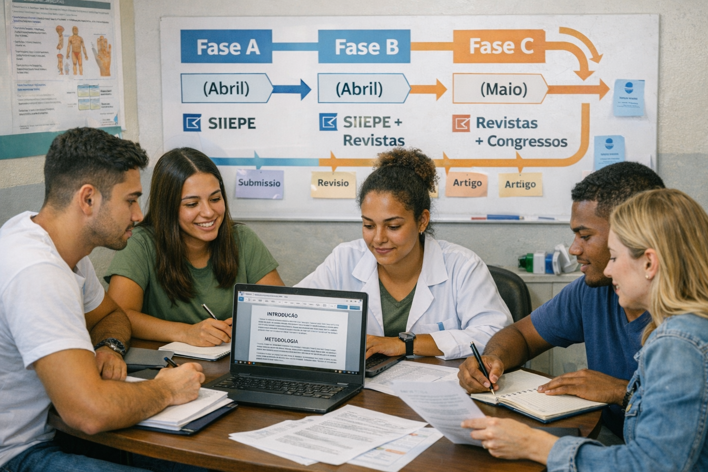

Atividade de Abril • G10. Bora Publicar!
Documento interno para monitores • Atualizado em 05/04/2026
Fase A: SIIEPE
Fase B: continuidade + revista
Publicação: formação + compromisso
Orientação geral
A atividade de abril foi organizada em duas fases de 12 dias, com foco central em publicações.
Primeiro entra o esforço voltado ao SIIEPE; depois, a mesma base amadurece com visão de publicação em revista.

🔵 Fase A • 06 a 18 de abril
Artigos foco SIIEPE.
Objetivo: estruturar e submeter resumo expandido (2–4 páginas).
Objetivo: estruturar e submeter resumo expandido (2–4 páginas).
- Foco: publicações no SIIEPE UFPel.
- Meta: sair com texto pronto para submissão.
- Suporte direto na construção dos trabalhos.
🟢 Fase B • 19 até final de abril
SIIEPE + continuidade em maio para revista.
Hora de refinar, aprofundar e deixar o material mais redondo.
Hora de refinar, aprofundar e deixar o material mais redondo.
- Foco: continuidade com visão de publicação em revista.
- Ajuste de qualidade, resultados e redação.
- Organização do que segue para os próximos envios.
O que precisa ficar pronto
Meta de abril: transformar material já existente em publicação real.
Sem romance acadêmico demais: texto, autoria, eixo, formato e envio.
Sem romance acadêmico demais: texto, autoria, eixo, formato e envio.
2fases
12dias por fase
3monitores por artigo
5–6autores no total
Critérios da divisão dos grupos
- trabalhos já iniciados na atividade de férias;
- grupos que já vinham trabalhando;
- frequência presencial.
Cada artigo tem até 3 monitores. A lógica é simples: coordenação, preceptoria e orientação também precisam aparecer,
contribuir e revisar. Máquina parada não publica nada.
Regra do jogo
Bolsa implica publicação
Quem é bolsista precisa publicar. Isso faz parte da formação e da condição da bolsa PET.
12 dias bastam
Para um trabalho no SIIEPE, 12 dias são mais do que suficientes quando o grupo trabalha de verdade.
Quem não vai puxar, avisa
Quem não for trabalhar no artigo precisa comunicar. Aqui ninguém carrega ninguém.
Como decidir a submissão
- Definir o eixo: ensino, pesquisa ou extensão.
- Definir o nível: graduação.
- Definir o tipo de trabalho que será submetido.
- Alinhar com a equipe: coordenadora, tutor, preceptoras e orientador de serviço.
- Ajustar a forma do texto conforme a modalidade escolhida.
A categorização não é detalhe. Ela muda formato, abordagem e até o jeito de apresentar o trabalho.
Autoria e estrutura do texto
✍️ Autoria
- 1º autor: quem mais trabalhou.
- Último autor: orientador, coordenação, preceptoria ou tutor.
- A ordem importa e deve ser combinada com maturidade.
🧠 Estrutura básica
- Introdução
- Revisão ou base teórica
- Método
- Resultados
- Conclusão
- Referências
Apoio disponível
Parte sistemas / IA / dados
Apoio direto comigo.
Apoio direto comigo.
Parte clínica / território / VD
Apoio com preceptoras e orientadores.
Apoio com preceptoras e orientadores.
Usem o apoio. Travar sozinho por orgulho acadêmico é desperdício de tempo.
Dica final
Quem nunca publicou deve entrar no site do SIIEPE e olhar trabalhos já aprovados.
É o jeito mais rápido de entender padrão, tom e escala do que precisa ser entregue.